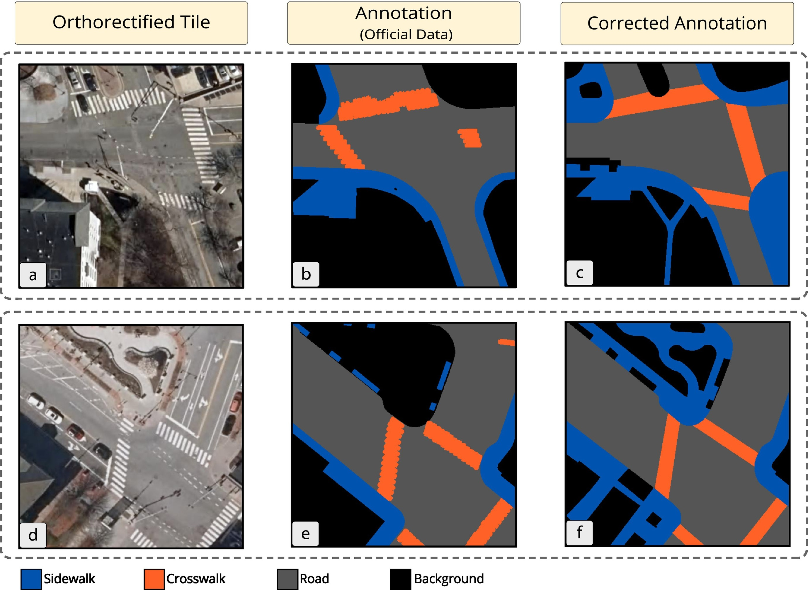
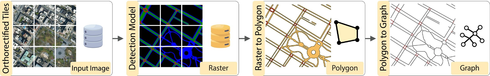

Default Project
Visual Analytics for AI-Generated Urban Infrastructure Maps
Project Overview
Visual Analytics for AI-Generated Urban Infrastructure Maps
The Goal
Design and build visualization systems to help domain experts understand, debug, and analyze ML pipelines that generate urban infrastructure maps from aerial imagery.
The Tool
Tile2Net: A semantic segmentation system that extracts pedestrian networks from aerial imagery.

Hosseini, M., et al. (2023). Mapping the walk: A scalable computer vision approach for generating sidewalk network datasets from aerial imagery. Computers, Environment and Urban Systems, 101, 101950.
Motivation
Why Urban Infrastructure Maps Matter
Current Challenges
- Manual mapping is slow and expensive
- Data gaps in pedestrian infrastructure
- Outdated city datasets
- Accessibility planning requires detailed data
The Solution
Semantic Segmentation + Aerial Imagery
Automatically classify every pixel:
- Roads
- Buildings
- Sidewalks
- Crosswalks
- Vegetation
The Tile2Net Pipeline
State-of-the-art tool for extracting sidewalk and crosswalk networks from aerial imagery
The Challenge
The Black Box is Brittle
Multi-stage ML systems can introduce and compound errors at each stage:
Stage 1: Image Ingestion
- Different lighting conditions
- Seasonal variations
- Resolution mismatches
Stage 2: Segmentation
- Occlusions (trees, shadows)
- Faded markings
- Construction zones
Stage 3: Raster-to-Polygon
- Geometric artifacts
- Boundary smoothing errors
- Feature simplification issues
Stage 4: Polygon-to-Network
- Disconnected components
- Incorrect topology
- Jagged centerlines
The Problem
Limited Reliability
- Errors cascade through pipeline
- Hard to identify failure points
- Difficult to validate outputs
- Reduced trust from urban planners
Your Mission
Build interactive visualization tools to:
- Understand model behavior
- Debug pipeline stages
- Analyze output quality
- Increase trustworthiness
Project Ideas
Three Potential Directions
You can choose one direction or propose a hybrid/variation:
- Idea A: The Segmentation Detective
- Diagnose pixel-level segmentation failures
- Idea B: The Network Quality Inspector
- Assess topological and geometric quality
- Idea C: The Urban Time Traveler
- Analyze infrastructure evolution over time
Idea A: The Segmentation Detective
Goal & Key Questions
Goal
Build a visual analytics tool to diagnose and understand failures of the semantic segmentation model at the pixel and tile level.
Key Questions
- Where does the model succeed and where does it fail?
- What visual features correlate with specific error types?
- How does prediction confidence relate to accuracy?
- How do environmental factors (shadows, tree cover) impact performance?
Potential Features
Linked Views Dashboard
- Original aerial image
- Ground-truth annotations
- Model predictions
- Confidence maps
Error Overlay
- Highlight false positives
- Highlight false negatives
- Color-coded by error type
Interactive Tools
- Filter by error type
- Filter by confidence threshold
- Isolate problem regions
Magnification Lens
- Focus on specific regions
- View all layers simultaneously
- Compare predictions vs. truth
Idea B: The Network Quality Inspector
Goal & Key Questions
Goal
Create a visualization tool to assess the topological and geometric quality of the final pedestrian network graph.
Key Questions
- Where are breaks or disconnected components?
- Are intersections generated correctly?
- Can we flag geometric anomalies automatically?
- How does the network compare to baselines (e.g., OpenStreetMap)?
Potential Features
Quality-Coded Map
- Color edges/nodes by metrics
- Connectivity indicators
- Smoothness measures
- Segment length analysis
Automatic Flagging
- Dead-end detection
- Isolated subgraphs
- Click to inspect imagery
Network Comparison
- Diff view vs. OpenStreetMap
- Diff view vs. city data
- Overlay reference networks
Graph Metrics
- Node degree distribution
- Betweenness centrality
- Network connectivity
- High-level quality overview
Idea C: The Urban Time Traveler
Goal & Key Questions
Goal
Design a visual tool for analyzing the evolution of urban pedestrian infrastructure over time using historical aerial imagery.
Key Questions
- How has the pedestrian network changed over the last decade?
- Where have sidewalks/crosswalks been added or removed?
- Can we correlate changes with city planning initiatives?
- How do walkability metrics change over time?
Potential Features
Visual Diff Map
- Highlight changes between time periods
- Show added paths (green)
- Show removed paths (red)
- Show modified paths (yellow)
Timeline Animation
- Slider control
- Animate network evolution
- Year-by-year transitions
Temporal Dashboard
- Network map view
- Linked time-series charts
- Track metrics over time:
- Total sidewalk length
- Network density
- Number of intersections
Case Study Example
Cambridge, MA: 23% change in crosswalks over 8 years
Getting Started
Resources: Codebase & Data
Primary Tool
Tile2Net
- Install and run the pipeline
- GitHub Repository
Aerial Imagery Sources
- NYC Planimetrics: High-res imagery for multiple years
- USGS NAIP: National aerial imagery
- Google Earth Engine: Vast satellite/aerial catalog
Ground Truth Data
For Comparison & Validation:
- OpenStreetMap (OSM)
- Crowd-sourced global data
- Detailed pedestrian features
- City GIS Portals
- Official sidewalk data
- Street centerlines
- Planning datasets
NYC Open Data: https://opendata.cityofnewyork.us/ | USGS EarthExplorer: https://earthexplorer.usgs.gov/
Deliverables
What You Need to Submit
1. Project Proposal (Due Oct 21)
- Length: 1-2 pages
- Content: Chosen direction, research questions, datasets, timeline
2. Final Report (Due Dec 11)
- Length: 4-6 pages (conference paper format, e.g., IEEE VIS)
- Sections: Motivation, related work, system design, implementation, case study
What You Need to Submit (cont.)
3. Source Code
- GitHub repository with well-documented code
- Setup instructions
- Dependencies listed
- Example usage
4. Demo Video
- Length: 3-5 minutes
- Content:
- System features showcase
- Walk through usage scenario
- Highlight key insights
Summary
Your Mission
The Challenge
Multi-stage ML pipelines for urban mapping are powerful but brittle.
The Solution
Build visual analytics tools to:
- Diagnose failures
- Validate outputs
- Build trust
- Enable exploration
Choose Your Path
- Idea A: Debug segmentation models
- Idea B: Inspect network quality
- Idea C: Track urban evolution
Impact
Help urban planners make data-driven decisions with trustworthy AI-generated maps.
Questions?
Next Steps
- Review Tile2Net documentation
- Explore available datasets
- Choose your project direction
- Start drafting your proposal
Tile2Net: https://github.com/VIDA-NYU/tile2net